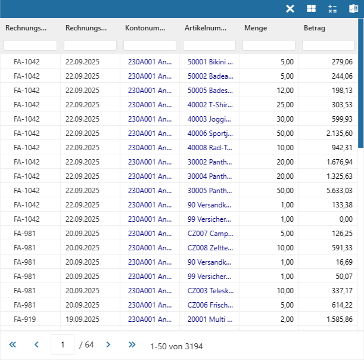

Über die View 360 Tabelle kann man sich alle verknüpften Objekte einer Objektgruppe anzeigen lassen (inklusive Detailinformationen). Die Tabelle selber wird durch Anwahl der Datensatzanzahl (siehe "Objektgruppe") oder des Buttons "Tabelle" geöffnet.
Hinweis
Einstellungen zur Tabelle können u.a. in den Einstellungen der View 360 getroffen werden.

In der Tabelle werden alle Datensätze der Gruppe dargestellt. Der Aufbau der Tabelle wird dabei den Widget-Einstellungen definiert.
Die Tabelle selber bietet die Standardfunktionen einer WinLine Tabelle. D.h. über die Suchzeile kann nach bestimmten Datensätzen gesucht werden und durch Anwahl der Spaltenköpfe ist es möglich die Sortierung zu verändern.
Buttons
Ø Ende
Durch Anwahl des Buttons "Ende" wird die Tabelle geschlossen.
Ø Power Report
Durch Drücken des Buttons Power Report werden die Daten der Tabelle grafisch dargestellt. Die Ausgabe ist individuell anpassbar und erfolgt in der Form von "Widgets", die unterschiedlichste Darstellungen ermöglichen.
Ø WinCalc
Mit Hilfe dieses Buttons wird der Inhalt der Tabelle an das Tabellenkalkulationsprogramm WinCalc übergeben.
Ø Ausgabe Excel
Durch Anwahl des Buttons "Ausgabe Excel" wird der Inhalt der Tabelle an Microsoft Excel übergeben.